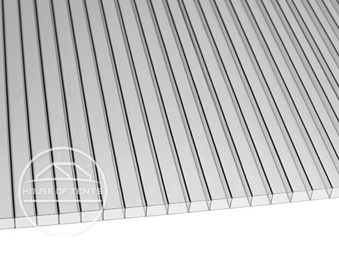
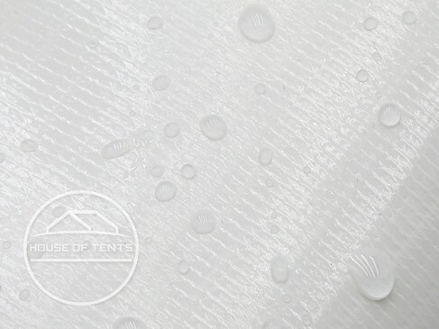
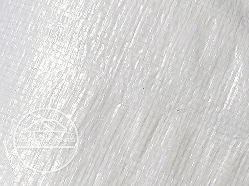
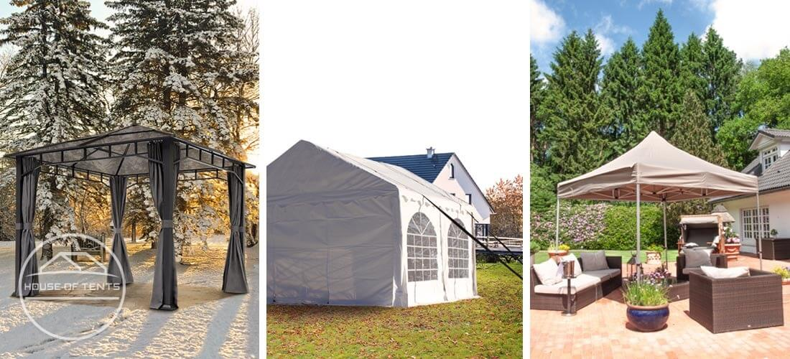

Weatherproof & stable
Aluminium and steel frames
All models include a waterproof roof
Accessories available to increase stability
Weatherproof gazebos: waterproof, stable & UV-resistant
Whether pop up gazebos, garden gazebos or marquees - all gazebo models from House of Tents are of very high quality. They are an effective shelter from harmful UV rays, rain, and wind. Find your favourite gazebo for a summer party, outdoor wedding, or to leave standing in your home garden all year round without hesitation!
Roof materials in comparison
House of Tents offers you a wide range of gazebos in different sizes, frames and roof materials. Whether polycarbonate, polyester, PE or PVC canopies - what exactly are the properties of these materials? How weatherproof is which model?
Polycarbonate
Advantages:
- Robust & rigid
- High heat resistance
- Protects well in case of hail
- Highly weather resistant
- 100 % waterproof
Our products with polycarbonate
Garden gazebos >Polyester

Advantages:
- Lightweight & inexpensive
- Dries quickly after rain
- Doesn't require much maintenance
- Highly abrasion resistant
- With PVC coating 100 % waterproof
Our products with polyester
Pop up gazebos > Garden gazebos >PVC
Advantages:
- Durable & strong
- Flame retardant
- Can be repaired in an emergency
- Similar to the feel of a truck tarpaulin
- 100 % waterproof
Our products with PVC
Marquees > Garden gazebos >Polyethylene (PE)
Advantages:
- Light & inexpensive
- Space-saving in transport
- Enables quick assembly and dismantling
- Easy to handle
- 100 % waterproof
Our products with PE
Marquees >Which gazebo for which weather?
For protection from the sun
All high quality gazebos at House of Tents have a high UV resistance - ideal for hot summer days. If UV protection 30+ is enough for you, then the Rendezvous and Sunset steel garden gazebos are just right. If you would like increased protection against UV radiation, then we recommend either our PE marquees, our garden gazebos in the Premium and Deluxe lines, or our Economy steel and Economy aluminium pop up gazebos. All these gazebo tents offer great UV protection of SPF 50+. For the ultimate in sun protection all of our high quality PVC (Profi-line) marquees, as well as the Premium steel and Professional aluminium pop up gazebos offer UV protection of SPF 80+.
For protection from the rain and snow
All gazebos at House of Tents are 100% waterproof. But especially in winter, a season with a lot of wind and heavy rain, the gazebo frame makes all the difference. For example, heavy duty gazebos are more weatherproof than wooden frames. Wooden gazebos are also waterproof, but over time, the wood can rot and splinter. Steel gazebos on the other hand, are very weather-resistant while aluminium gazebos provide the best protection from rust. For garden gazebos that will be standing in one place over winter, we advise choosing a model with a hardtop, as the heavy duty polycarbonate panels can stand up to the worst weather conditions. Depending on the model, they can even withstand snow loads of 50 to 80 kg/m².
Celebrate great parties in the garden regardless of the weather
- great quality outdoor canopies allow you to throw parties with
less stress. Celebrate birthdays, weddings or host events in
your garden. All marquees from House of Tents are 100%
waterproof and if you choose a PVC garden tent, you will also be
able to enjoy shelter deep into the autumn. To ensure that your
product also stands up to strong winds, you will find
accessories to increase its stability in our shop. Equip your
marquee with a base frame, for example. Thanks to the groundbar
frame, the legs of your marquee cannot slip in strong winds,
giving it more support. Ground anchors for your patio or garden
are also advisable.
Tip: A storm has been announced or even snow?
Read our magazine article on how to secure your garden tent
against rain, snow and wind. This magazine article also presents
and compares the various accessories - weights or anchors for
soft and hard grounds including concrete, as well as tie down
kits.

Celebrate great parties in the garden regardless of the weather
- great quality outdoor canopies allow you to throw parties with
less stress. Celebrate birthdays, weddings or host events in
your garden. All marquees from House of Tents are 100%
waterproof and if you choose a PVC garden tent, you will also be
able to enjoy shelter deep into the autumn. To ensure that your
product also stands up to strong winds, you will find
accessories to increase its stability in our shop. Equip your
marquee with a base frame, for example. Thanks to the groundbar
frame, the legs of your marquee cannot slip in strong winds,
giving it more support. Ground anchors for your patio or garden
are also advisable.
Tip: A storm has been announced or even snow?
Read our magazine article on how to secure your garden tent
against rain, snow and wind. This magazine article also presents
and compares the various accessories - weights or anchors for
soft and hard grounds including concrete, as well as tie down
kits.
Celebrate great parties in the garden regardless of the weather
- great quality outdoor canopies allow you to throw parties with
less stress. Celebrate birthdays, weddings or host events in
your garden. All marquees from House of Tents are 100%
waterproof and if you choose a PVC garden tent, you will also be
able to enjoy shelter deep into the autumn. To ensure that your
product also stands up to strong winds, you will find
accessories to increase its stability in our shop. Equip your
marquee with a base frame, for example. Thanks to the groundbar
frame, the legs of your marquee cannot slip in strong winds,
giving it more support. Ground anchors for your patio or garden
are also advisable.
Tip: A storm has been announced or even snow?
Read our magazine article on how to secure your garden tent
against rain, snow and wind. This magazine article also presents
and compares the various accessories - weights or anchors for
soft and hard grounds including concrete, as well as tie down
kits.
FAQ: Frequently asked questions
You'll be hard pressed to find a large variety of sizes of gazebo, starting from 2x3 metre models, with 3x3m gazebos being our biggest sellers. Marquees extend to a maximum size of 8x36m. For pop up gazebos our product range extends to 5x5m large gazebos. Garden gazebos are available as either 3x3m or 3x4m structures.
You'll be hard pressed to find a large variety of sizes of gazebo, starting from 2x3 metre models, with 3x3m gazebos being our biggest sellers. Marquees extend to a maximum size of 8x36m. For pop up gazebos our product range extends to 5x5m large gazebos. Garden gazebos are available as either 3x3m or 3x4m structures.
You'll be hard pressed to find a large variety of sizes of gazebo, starting from 2x3 metre models, with 3x3m gazebos being our biggest sellers. Marquees extend to a maximum size of 8x36m. For pop up gazebos our product range extends to 5x5m large gazebos. Garden gazebos are available as either 3x3m or 3x4m structures.
House of Tents - we tents
Our expert customer service - always there for you!
Do you have any questions about our showerproof gazebos? Are you looking for a grey folding tent, for example, that will stay firmly on the ground even in a storm? Or would you simply like some personal advice? Feel free to call our expert customer service, we will be happy to advise you and give you all the answers to your questions!
We look forward to your call
Mon - Fr 8am - 5pm